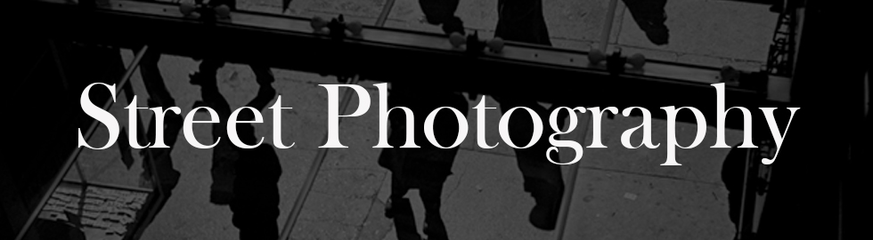
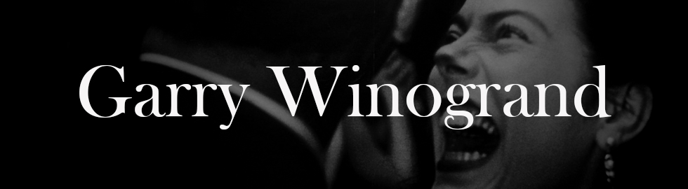
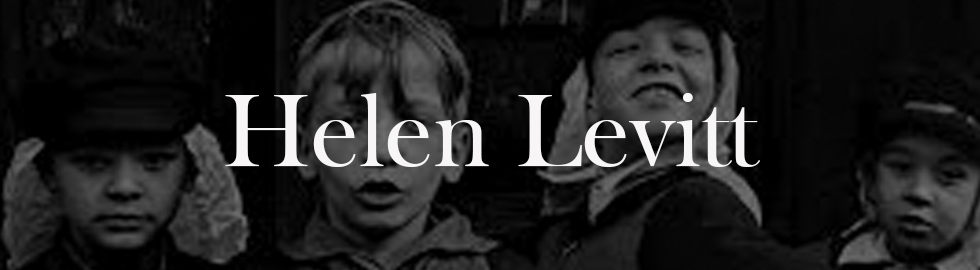

Despite being born in Switzerland, Robert Frank defined and diagnosed America in the ’50s in ways that his contemporaries couldn’t. While his peers were photographing the optimistic and prosperous 50’s post-war United States, Frank’s photography took a stark and much more realistic turn.
Frank’s childhood was difficult – in the 1930s, the fear of Hitler invading was real, and Frank’s father was stateless due to his German citizenship being revoked for being Jewish. “[The war] certainly convinced me to get out of Switzerland. To get out of Europe. It was mandatory that you would go somewhere and learn English.” Frank moved to the U.S. in 1947, and at first, he felt the optimism of America in the ’50s. “Leaving Switzerland and coming to America, we felt like the door opened. We were free. And I liked it. I liked it a lot. It was another world, where you could move, where you could take the train somewhere. Travel.”
Frank worked as a fashion photographer for Harper’s Bazaar and then as a freelance photojournalist for McCall’s, Vogue, and Fortune. However, he soon began to notice that there was a difference between the optimism and propaganda about American society versus the reality. He saw a grim and lonely country that was obsessed with money. “At that time as a photographer, I searched for very clear and strong pictures. I was attracted by what you call somber events.”
“I was attracted by what you call somber events.”
Frank received a Guggenheim Fellowship in 1955, which allowed him to purchase a used Ford and travel across the U.S. He visited Michigan, Georgia, Florida, Louisiana, Texas, California, Nevada, Utah, Montana, and Illinois. While he took his family on some of these road trips, he traveled alone for most of it, and it was a very lonely and grueling trip. All in all, he took 28,000 shots for a book that would be called The Americans.
“I was absolutely free just to turn left or turn right without knowing what I would find.”
His first stop was Ford’s River Rouge plant in Dearborn Michigan. “I went to Detroit to photograph the Ford factories, and then it was clear to me I wanted to do this. It was summer and so loud. So much noise. So much heat. It was hell. So much screaming.”
“In America, I wanted to do it differently. There was no more romanticism really. It was a look at the way a country that I didn’t really know, that I had only lived in for a couple of years, so The Americans was the first time that I made a trip across the country.”
“It was really a hard trip, but I felt often something strong from the people.” “I looked at poor people, how they tried to survive, what a lonely time it can be in America, and what a tough country it is, and also I saw for the first time the way the blacks were treated. It was surprising. But it didn’t make me hate America, it made me understand how people can be. You learn a lot traveling. You learn a lot when you’re a photographer.” “That trip I got to like black people so much more than white people.”
Being a Jewish photographer in the south in the ’50s did not come without its own problems, particularly being a foreigner with cameras at the beginning of the Cold War. People thought he was a spy. “Are you a Commie?” he was asked. In one incident, he was told by a sheriff that he had an hour to leave the town. In another incident in Arkansas, he recalled, “I remember the [policeman] took me into the police station, and he sat there and put his feet on the table. It came out that I was Jewish because I had a letter from the Guggenheim Foundation. They really were primitive.” The sheriff said, “Well, we have to get somebody who speaks Yiddish. They wanted to make a thing out of it. It was the only time it happened on the trip. They put me in jail. It was scary. Nobody knew where I was.”
The Americans was a stark change from the polished, safe, and optimistic photographs of America at the time. Many of his subjects were on the fringe of society – outsiders in a way, as he was, yet entirely American. He stayed in cheap hotels and photographed in department stores, diners, sidewalks, parks, and rallies. While there were some sentimental photographs, he was attracted to the imperfect and the ordinary. He caught people in normal moments, showing loneliness, boredom, and stress.
“...he was attracted to the imperfect and the ordinary.”
However, when he returned, Frank found it difficult to find a publisher for The Americans. His images were so different at the time that people did not appreciate them – they did not know what to make of them. His photographs covered the tensions of the time, and he contrasted them with the optimistic pillars of American society – Frank was particularly attracted to the the jukebox, the flag, and the car.
The book was eventually published in the U.S. in 1959 to much criticism. “Meaningless blur, grain, muddy exposures, drunken horizons and general sloppiness,” wrote Popular Photography. “The Museum of Modern Art wouldn’t even sell the book,” Frank said, “But the younger people caught on.” Over time, the book would be recognized as the most significant book in American photography. Frank received his first individual show in 1961 and showed at MoMA in 1962.
  